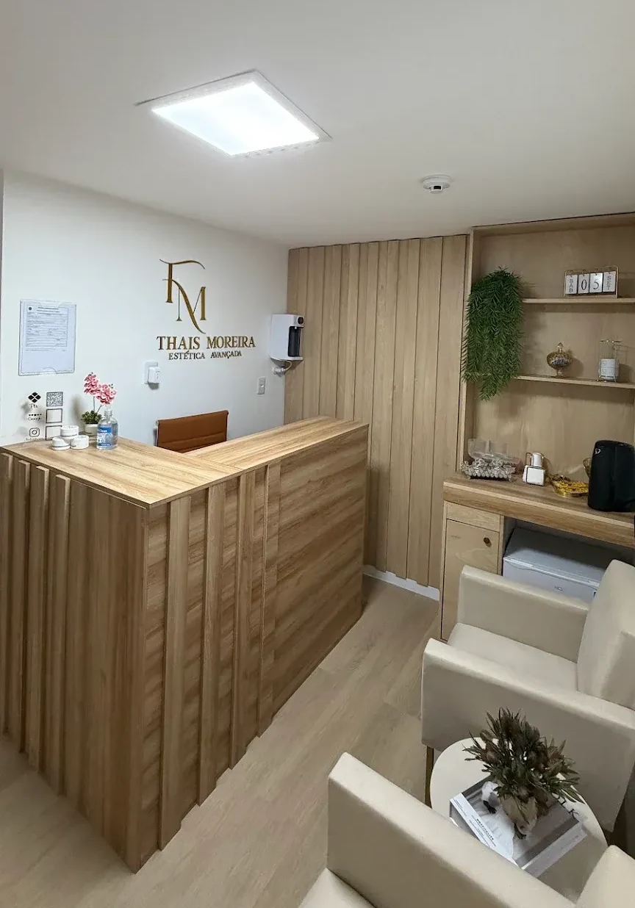
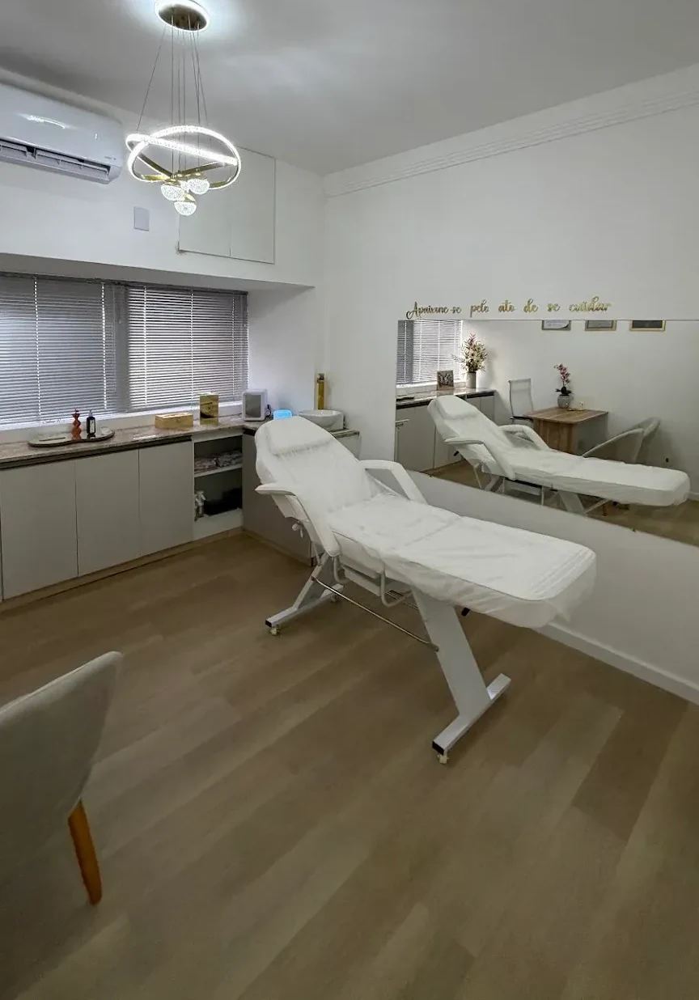

Criolipólise
Procedimento corporal que utiliza resfriamento controlado em regiões específicas.
ESTÉTICA & COSMETOLOGIA · SALVADOR, BA
Estética corporal e facial com protocolos personalizados, mais de 10 anos de experiência e atenção aos seus objetivos de autocuidado.
Agende sua avaliaçãoCUIDADO EM CADA DETALHE
Conheça as opções de estética corporal e facial divulgadas pela clínica. A indicação de cada técnica depende de avaliação individual.
Procedimento corporal que utiliza resfriamento controlado em regiões específicas.
Técnica manual de cuidado corporal, com indicação individualizada.
Conheça as possibilidades de cuidado estético corporal e as indicações da técnica.
Recurso estético de estimulação muscular, conforme avaliação.
Opções de cuidado corporal e bem-estar.
Cuidados faciais voltados à higiene e à manutenção da pele.
PROTOCOLO PERSONALIZADO
Da própria trajetória de emagrecimento nasceu o método Magras Magras, criado por Thaís Moreira para oferecer um cuidado estético planejado de acordo com as necessidades e os objetivos de cada pessoa.

CONHEÇA A PROFISSIONAL
Esteticista e cosmetóloga, descobri na minha própria trajetória de emagrecimento uma paixão que vai além da estética.
Com mais de 10 anos de atuação na área, desenvolvi o método Magras Magras para oferecer um cuidado estratégico e personalizado, respeitando a individualidade de cada pessoa.
Vamos conversarA CLÍNICA
Um ambiente acolhedor, confortável e dedicado ao seu bem-estar, no Caminho das Árvores, em Salvador.
Edifício Esplanada Trade Center · Sala 209
Caminho das Árvores · Salvador – BA
Consulte a localização e a disponibilidade pelo WhatsApp antes de sua visita.
Traçar rota

DÚVIDAS FREQUENTES
Saiba mais antes de agendar sua avaliação.
Entre em contato pelo WhatsApp para consultar a disponibilidade.
A escolha depende do seu histórico, das características individuais e dos seus objetivos. A avaliação ajuda a orientar a indicação.
Não. Os resultados variam de acordo com características individuais e o tratamento realizado.
Converse com a clínica para conhecer os valores atualizados e as possibilidades de atendimento.
No Caminho das Árvores, em Salvador. Confirme o endereço pelo WhatsApp antes de comparecer.
CONECTE-SE COMIGO
Acompanhe as novidades da clínica, informações sobre estética e os bastidores da rotina profissional.
Acompanhe no InstagramRESERVE UM MOMENTO PARA VOCÊ
Converse com a Clínica Thaís Moreira, esclareça suas dúvidas e conheça as possibilidades de cuidado.
Agende pelo WhatsApp (71) 99165-4021@thaymoreiraestetica